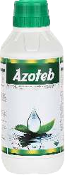
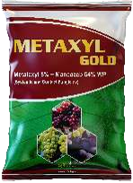

AZOTEB
AZOXYSTROBIN 23% SC
Target Fungal : Downy Mildew, Powdery Mildew, Fruit rot,
Powdery mildew Early & Late Blight, Late Bight,
Downy mildew, Powdery mildew, Blight & Powdery mildew
Dose :150-200 ml./ Acre
Packing :100ml. 1250ml. 500ml. 1 Ltr.
AZOTEB GOLD
AZOXYSTROBIN 11% + TEBUCONAZOLE 18.3% SC
Target Fungal : Fruit rot, Purple
blotch & Powdery mildew, Scab, owdery mildew and Pre Mature Leaf fall disease
Dose :200-250 ml./ Acre
Packing : 100ml. 250ml. 500ml. 1 Ltr.

AGRIBONES
TEBUCONAZOLE 38.39% SC
Target Fungal :Systemic action fungicide (Triazole group). Buonos fungicide
(Tebuconazole)is the demethylase inhibitor, which inhibits the reproduction and further growth of fungus.
Dose :250-300ml/Acre
Packing :100ml. 250ml. 500ml. 1 Ltr.
FOLI STAR
TEBUCONAZOLE 25.9% EC
Target Fungal :Blast, Sheath Blight, Powdery Mildew, Fruit Rot, Tikka and Rust. Systemic Fungicide
Dose :200-300ml. / Acre
Packing :250 ml. 1500 ml. 1 Ltr.
ROCKSTAR
TEBUCONAZOLE 25% WG
Target Fungal : It is a systemic fungicide and delivers both curative
and preventative control of diseased plants. bacteria, and viruses affecting plants.
Dose :250-400gm Per Acer
Packing :100gm. 250gm. 500gm.
AGRI CURE
TEBUCONAZOLE 10% + SULPHAR 65% WG
Target Fungal : It control powdery mildew and rot diseases, fungal effect recover
Dose :500 gm./ Acre
Packing : 250 gm. 500 gm.

AGRINATIVE
TRICYCLAZOLE 70% WG
Target Fungal :Systemic fungicide absorbed rapidly by the roots,
with translocation through the plant.
Dose :120-150gm per acre
Packing :100gm. 250gm.

TRAIZOXY
TRICYCLAZOLE 20.4% w/w + AZOXYSTROBIN 6.8% w/w SC
Target Fungal : It has excellent protective activity for both Sheath blight and
Blast diseases management on Rice.It applications leads to healthy crop
Dose :250-400ml Per Acre
Packing :100ml. 250ml. | 500ml. I 1 Ltr.
TIK TOK
TRICYCLAZOLE 18.0% + TEBUCONAZOLE 14.4% SC
Target Fungal : It is systemic in rice
and will control rice blast disease , vegetable, fruits and plantation.
Dose :300-400ml Per Acre.
Packing : 100ml. 250ml: 500ml. 1 Ltr.
AGRITIN
CARBENDAZIM 50% WP
Target Fungal :controls the diseases of crops like blast,stem rot,
root rot, anthracnose, leaf spot, scab, leaf spot.coller rot.
Dose :250-500GM PER ACRE
Packing : 250gm 500gm. 1 kg
CARBENDA
CARBENDAZIM 46.27% SC
Target Fungal :Control of a wide range of fungal diseases such as mould, spot,
mildew, scorch, rot and blight in a powdery mildew varkety of crops
Dose :250-300ml Per Acre
Packing :250gm. 500gm. 1 kg.

AGRI SHARP
CARBENDAZIM 12% + MANCOZEB 63% WP
Target Fungal :Blast, sheath blight Leaf spot & rust blight, powdery & downy mildew
Dose :250-500gm/acre
Packing :250gm. 500gm. 1 Kg.
AGRI M-45
MANCOZEB 75% WP
Target Fungal :Early and late Blight, Blight,
Downy mildew, leaf spot, damping off, fruit fot sigatoka Tikka and rust
Dose :300gm-1 kg./acre
Packing :250gm. 500gm. 1 Kg

METAXYL GOLD
METALAXYL 8% + MANCOZEB 64% WP
Target Fungal :to control plant diseases caused by Oomycete fungi.
Dose :300-400gm/Acer
Packing : 250gm. 500gm. 1kg
METALAXYL
35% W.S.
Target Fungal :control leaf spot and rust disease of different types of crops like potatoes, chili,
cauliflower, cabbage, peas, groundnut, paddy, wheat, sugarcane, etc
Dose :100-150ml Per Acre
Packing :250gm. 500gm. 1kg

HEXA TAF-75
HEXACONAZOLE 75% WG
Target Fungal :Used for the control of sheath blight
and sheath rot on Paddy, Anthracnose and Powdery Mildew on Chilli.
Dose :60-100gm/acre
Packing :50gm. 100gm. 250gm. 500gm.